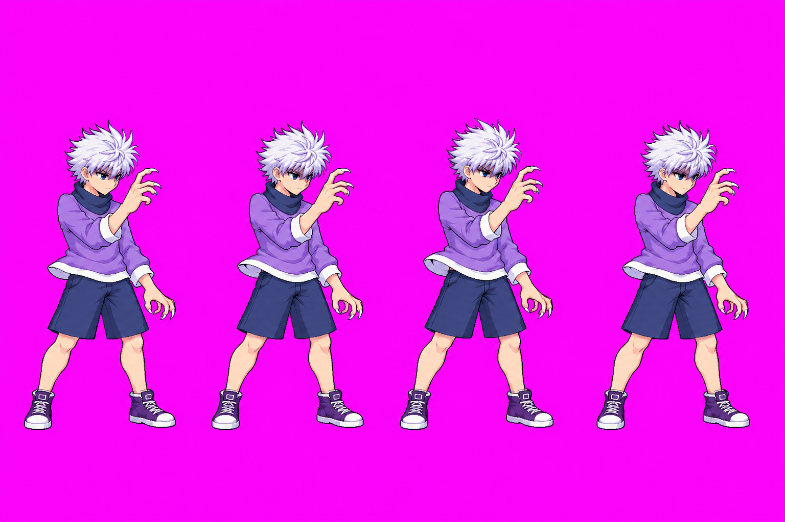
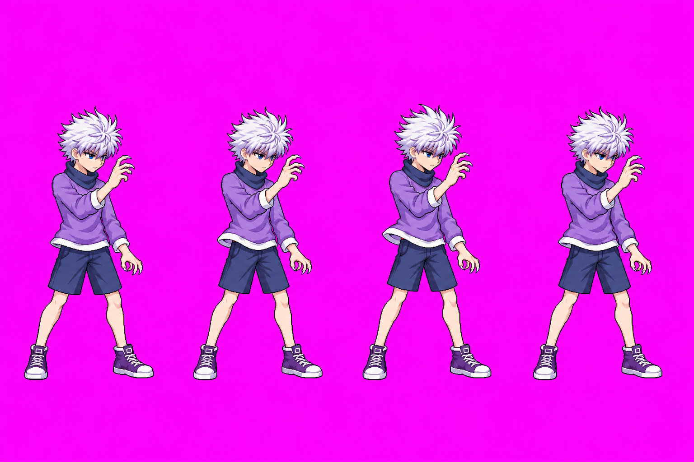
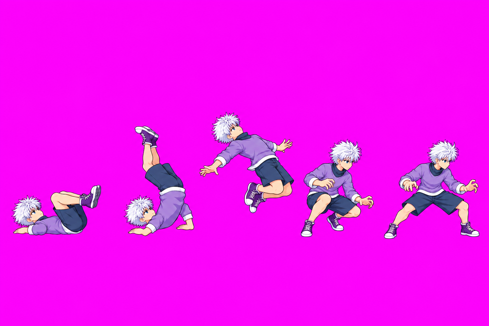
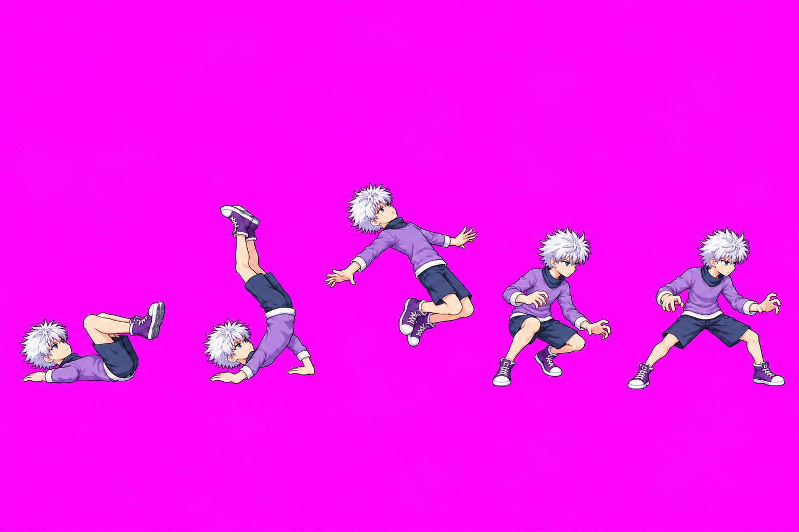
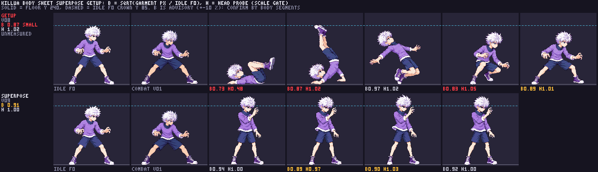

Identity
Both strips retain Killua's approved silver-white hair, purple shirt, navy collar and shorts, and purple-white shoes. The original four-frame superPose loop and five-frame kip-up order remain.
Visual approval received via Claude relay audit1 #8. The user approved superPose v09 and getup v08 as drawn (“Approve both”). Astra's exact-atlas anatomy/scale audit passes both drawings. Getup v08 remains on technical hold for the folded-foot floor-contact finding pending Claude's runtime contact/shadow disposition. No production atlas was written.
Both strips retain Killua's approved silver-white hair, purple shirt, navy collar and shorts, and purple-white shoes. The original four-frame superPose loop and five-frame kip-up order remain.
SuperPose v09 narrows the shorts and limbs and reduces hand size toward the approved neutral. Getup v08 narrows f1-f4 toward idle build while retaining the lying, inverted, airborne, crouch and stance poses.
SuperPose head ratios are 0.975-1.029 (median 1.000) and body B median is 0.910. Getup f1-f4 head ratios are 1.010-1.050; f0 is low-confidence. Getup body B median is 0.866 and the packer reports a floor-contact hold on f0.
superPose v09Four-frame subtle loop. Shorts, legs and hands were redrawn toward the approved neutral's size; pose and loop timing are retained. Head probe reads all frames. Body-area B by frame is 0.938, 0.890, 0.900 and 0.920 (median 0.910), an advisory comparison to idle f0. No hitbox or hand override is defined for this animation.


getup v08Five-frame kip-up. The same action sequence remains: lying on his back, rolling over the shoulders, springing airborne, landing in a crouch, then standing. Frames f1-f4 narrow the torso, sleeves and limbs toward idle build.


These packed candidate cells and the approved references below share the same pixel scale. The body sheet shows idle f0, approved combat, and every candidate frame in one comparison.

Astra anatomy/scale audit: superPose v09 passes all four frames and its loop. getup v08 passes anatomy and scale across all five frames; f0's 0.480 head probe is invalid for the rotated full-size head. Its version-bound anatomy QA does not clear the separate floor rule. The literal f0 check finds 98/128 occupied columns (76.5625%) within 5 px of y=240, with fifth gaps [0, 0, 1, 1, 13] px. The folded legs/feet cause the last-fifth warning while the hand/back/hip support is grounded. Getup remains on technical hold until Claude checks runtime contact and shadow at the spec camera. The frame-by-frame record is in the branch at art/characters/killua/production/size-r8/ASTRA_AUDIT.md.
The displayed atlas was packed in an isolated diagnostic folder using the repository's approved versions and quantized to 48 colors; its review-strip crops were verified pixel-identical to the atlas cells. It did not write public/characters/killua/ or production frame folders. The manifest records the visual approvals separately from technical QA.
Generation calls, exact prompts, hashes and pack evidence are recorded in the committed branch file art/characters/killua/production/size-r8/GENERATION_INVENTORY.md.